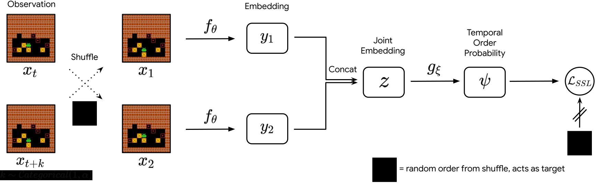
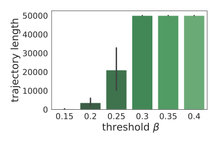
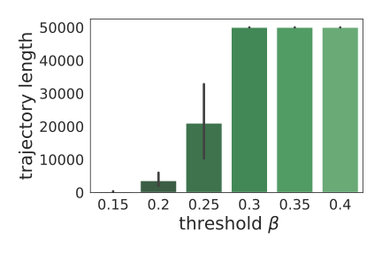
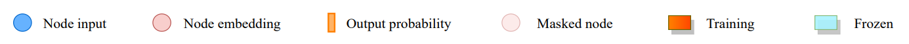

Reinforcement Learning for Combinatorial Optimization
Leveraging Uncertainty
Structure
and Priors
Introduction
What is Combinatorial Optimization?
Combinatorial optimization consists of finding an optimal object from a finite set of objects.
In many such problems, exhaustive search is not tractable. (Schrijver, 2003)
Combinatorial Optimization Problems

|
|
|

|
|
|
Reinforcement Learning
Reinforcement Learning (RL) is a subfield of machine learning that deals with sequential decision making.
Markov Decision Process (Puterman, 1994)
Markov Decision Process (MDP): $(S, A, T, p, r)$.
$S$: the set of states $s$.
$A$: the set of actions $a$.
$T$: the set of instants (discrete time).
$p$: the transition function $p(s_{t+1} \mid s_t, a)$
$r$: the reward function $r(s, a, s')$
Motivation
(De)Motivation
(De)Motivation
(De)Motivation
(De)Motivation
(De)Motivation
Why should we use RL for CO?
Why shouldn't we use RL for CO?
- Combinatorial optimization has been studied for decades.
- Combinatorial optimization problems are deterministic. How to exploit uncertainty?
- Combinatorial optimization problems generally have a structure. How to leverage structure and priors?
- Leveraging structure
- Dealing with uncertainty
- Expert knowledge for defining operators
- Problem-specific
- Bias toward initial solution
- General
- Amenable to stochastic problems
- Need extra sampling methods
- Reversibility
- Redundancy
- Populations for robustness
- Encode once with a large transformer.
- Decode at every timestep with a small decoder to get the next action.
- Scalability: using a population should not add too much of a boilerplate.
- Diversity: agents should propose different solutions.
- No expert knowledge: tackling every CO problems with the same algorithm and avoiding (likely sub-optimal) human priors.
- Performance: focus solely on the population performance without explicit behavioral markers and diversity metrics.
- Planning against unknown opponents
- Structure
- Use an architecture with specific inductive biases
- Be careful about irreversible actions
- Exploit redundancies in the trajectories to explore efficiently
- Uncertainty
- RL approaches shine when there is uncertainty or stochasticity on the problem
- When the optimal decision is impossible to compute, use a population of solvers for robustness
- It can take into account the specific (unknown) distribution of encountered problem instances
- It is a general framework that can be applied to any problem that can be formulated as an MDP
- It does not require pre-solved instances to learn from
- It can natively deal with uncertainty on the problem data
- RL can be compute-intensive, but most of the cost is paid during training. Once the agent is trained, it can be used to solve new instances of the problem quickly.
- International Conferences
- Geometric deep reinforcement learning for dynamic DAG scheduling. (IEEE ADPRL 2020)
- A reinforcement learning based strategy for heterogeneous dynamic scheduling. (IEEE CLUSTER 2021)
- There Is No Turning Back: A Self-Supervised Approach for Reversibility-Aware Reinforcement Learning (NeurIPS 2021)
- Workshops
- Better state exploration using action sequence equivalence (DRL at NeurIPS 2022)
- Preprints
- Population-Based Reinforcement Learning for Combinatorial Optimization (Submitted to NeurIPS 2023)
- Efficient Search of Human Adversarial Policies in Chess (Submitted to ECAI 2023)
- Software (collaboration)
- Jumanji: a Suite of Diverse and Challenging Reinforcement Learning Environments in JAX (Jumanji)
- Should reinforcementlearning be end-to-end?
- Combining RL with evolutionary algorithms
- Tool-augmented reinforcement learning
- Which problems are best suited for RL?
- Leveraging uncertainty
- From canonical to real-world problems
Outline
Two families of RL approaches
Leveraging structure
Sokoban

Reversibility via classification
Formalizing reversibility
Degree of Reversibility
We call the degree of reversibility following $\pi$ of action $a$ in state $s$ the quantity:
\begin{equation*}
\phi_\pi(s, a) = p_\pi(s \in \tau_{t+1:\infty}\mid s_t = s, a_t=a),
\end{equation*}
with $\tau = \{ s_i \}_{i=1 \, \ldots \, T} \sim \pi$ corresponding to a trajectory, and $\tau_{t:t'}$ the subset of the trajectory between the timesteps $t$ and $t'$.
Precedence estimation
Given $s, s'$ sampled from a trajectory, can we predict whether $s$ or $s'$ comes first ? It is a supervised classification problem, estimating $\mathbb{E}_{s_t=s, s_{t'} = s'} \big[ \mathbb{1}_{t'>t} \big] $.
Precedence Estimator
Given a fixed policy $\pi$, we define the precedence estimator between two states:
\begin{equation*}
{\psi}_{\pi}(s, s') = \lim_{T\rightarrow \infty} \mathbb{E}_{\tau \sim \pi} \, \mathbb{E}_{\substack{s_{t}=s, s_{t'}=s' \\ t, t' < T}} \big[ \mathbb{1}_{t'>t} \big].
\end{equation*}
(theorem: this limit exists!)
Estimating reversibility from precedence
Self-supervised Learning of the Chronological Order of Events

Reversibility for Sokoban
Application to safety
 


Leveraging structure
Dealing with uncertainty
Attention, learn to solve routing problems (Kool, 2019)
Presents an encoder / decoder architecture for combinatorial problem.

Why learning a population of solvers?
Why learning a population of solvers?
Whats does it tell us for CO problems?.
Why learning a population of solvers?
Whats does it tell us for CO problems?.
Population training wish list
Method: Poppy
How to train a population of agent focusing solely on the population performance?
Classic Objective
$J(\theta) = \mathbb{E}_{\rho \sim \mathcal{D}} \mathbb{E}_{\tau \sim \pi_{\theta}, \rho} R(\tau)$Population Objective
$ \scriptsize J_{\text{pop}}(\theta_1, \dots, \theta_K) \doteq \mathbb{E}_{\rho \sim \mathcal{D}} \mathbb{E}_{\tau_1 \sim \pi_{\theta_1}, \dots, \tau_K \sim \pi_{\theta_K}} \max\left[R(\tau_1), \dots, R(\tau_K)\right]$Policy gradient (Sutton, 1999)
$\color{red}{\nabla}J(\theta) = \mathbb{E}_{\rho \sim \mathcal{D}} \mathbb{E}_{\tau \sim \pi_{\theta}, \rho} R(\tau) \color{red}{\nabla} p_\theta(\tau)$Population policy gradient
$ \scriptsize \color{red}{\nabla}J_{\text{pop}}(\theta_1, \dots, \theta_K) \doteq \mathbb{E}_{\rho \sim \mathcal{D}} \mathbb{E}_{\tau_1, \dots, \tau_K} \bigr(R(\tau_{i^*}) - R(\tau_{i^{**}})\bigr) \color{red}{\nabla} \log p_{\theta_{i^{*}}}(\tau_{i^{*}})$ where $i^*$ is the best agent and $i^{**}$ the second best agentMethod: Poppy
How to initialize the population?
Results:
Analysis
Analysis
Conclusion
Reinforcement Learning for Combinatorial Optimization Leveraging Uncertainty, Structure and Priors
Motivation (2)
Why should we use RL for CO?